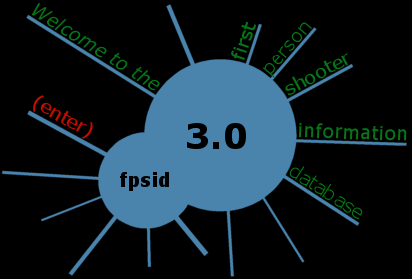

Note: FPSID is best viewed in 65k+ colors and at least 800x600. Color depths less than 65k makes most of the stuff look really ugly. Although you may use just about any browser down to lynx, anything below Netscape 4 or IE4 will result in reduced functionality. Communicator 4.6+ or IE5+ are reccomended. Both are free, so upgrade. If you have an older browser and want to continue, you've been warned.
